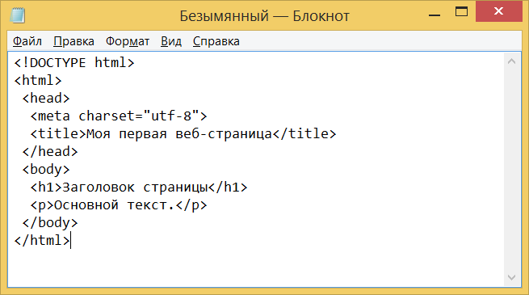

предназначен для создания в документах таблиц, но иногда используется и для оформления размещения элементов на странице.
С течением времени основная идея платформонезависимости языка HTML была принесена в жертву современным потребностям в
мультимедийном и графическом оформлении.
Версии
- HTML 2.0 — опубликован IETF как RFC 1866 в статусе Proposed Standard (24 ноября 1995 года);
- HTML 3.0 — 28 марта 1995 года — IETF Internet Draft (до 28 сентября 1995 года);
- HTML 3.2[8] — 14 января 1997 года;
- HTML 4.0[9] — 18 декабря 1997 года;
- HTML 4.01[10] — 24 декабря 1999 года;
- ISO/IEC 15445:2000 (так называемый ISO HTML, основан на HTML 4.01 Strict) — 15 мая 2000 года;
- HTML5— 28 октября 2014 года;
- HTML 5.1 начал разрабатываться 17 декабря 2012 года. Рекомендован к применению с 1 ноября 2016 года;
- HTML 5.2 был представлен 14 декабря 2017 года;
- HTML 5.3 был представлен 24 декабря 2018 года.
Официальной спецификации HTML 1.0 не существует. До 1995 года существовало множество неофициальных стандартов HTML.
Чтобы стандартная версия отличалась от них, ей сразу присвоили второй номер.
Версия 3 была предложена Консорциумом Всемирной паутины (W3C) в марте 1995 года и обеспечивала много новых возможностей,
таких как создание таблиц, «обтекание» изображений текстом и отображение сложных математических формул, поддержка gif формата.
Даже при том, что этот стандарт был совместим со второй версией, реализация его была сложна для браузеров того времени.
Версия 3.1 официально никогда не предлагалась, и следующей версией стандарта HTML стала 3.2,
в которой были опущены многие нововведения версии 3.0, но добавлены нестандартные элементы,
поддерживаемые браузерами Netscape Navigator и Mosaic.
В версии HTML 4.0 произошла некоторая «очистка» стандарта.
Многие элементы были отмечены как устаревшие и не рекомендованные (англ. deprecated).
В частности, тег , используемый для изменения свойств шрифта, был помечен как устаревший
(вместо него рекомендуется использовать таблицы стилей CSS).
В 1998 году Консорциум Всемирной паутины начал работу над новым языком разметки,
основанным на HTML 4, но соответствующим синтаксису XML.
Впоследствии новый язык получил название XHTML. Первая версия XHTML 1.0 одобрена в качестве рекомендации консорциума
Всемирной паутины 26 января 2000 года.
Планируемая версия XHTML 2.0 должна была разорвать совместимость со старыми версиями HTML и XHTML,
но 2 июля 2009 года Консорциум Всемирной паутины объявил,
что полномочия рабочей группы XHTML2 истекают в конце 2009 года.
Таким образом, была приостановлена вся дальнейшая разработка стандарта XHTML 2.0

 Изначально язык HTML был задуман и создан как средство структурирования и форматирования документов без их
привязки к средствам воспроизведения (отображения). В идеале, текст с разметкой HTML должен был без стилистических и структурных
искажений воспроизводиться на оборудовании с различной технической оснащённостью (цветной экран современного компьютера,
монохромный экран органайзера, ограниченный по размерам экран мобильного телефона или устройства и программы голосового
воспроизведения текстов). Однако современное применение HTML очень далеко от его изначальной задачи. Например,
тег
Изначально язык HTML был задуман и создан как средство структурирования и форматирования документов без их
привязки к средствам воспроизведения (отображения). В идеале, текст с разметкой HTML должен был без стилистических и структурных
искажений воспроизводиться на оборудовании с различной технической оснащённостью (цветной экран современного компьютера,
монохромный экран органайзера, ограниченный по размерам экран мобильного телефона или устройства и программы голосового
воспроизведения текстов). Однако современное применение HTML очень далеко от его изначальной задачи. Например,
тег